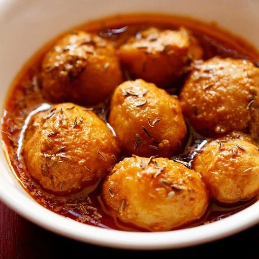

Dum Aloo(mah fav)

Dum Aloo is a delicious recipe of baby potatoes cooked in a gravy or sauce. This dish is made in various ways in Indian Cuisine. In this post I am sharing 2 such popular variations of dum aloo.
Ingredients
- 12-15 Baby Potatoes Boiled & Peeled or 4 Medium Potatoes Cubed
- 1 Large Onion Finely Chopped
- ½ cup Tomato Puree Grind 2 Medium Tomatoes without Water
- ½ cup Thick Fresh Curd
- 1 teaspoon Fresh Cream Optional (I used cream on top of homemade curd)
- 3 tablespoon Mustard Oil
- 1 teaspoon Cumin Seeds
- ¼ teaspoon Asafoetida
- 1 Dried Bay Leaf
- 2 Cloves
- 1 Green Cardamom
- 1 Cinnamon Stick
- 2 teaspoon Kasoor Methi
- 1 Green Chilli Finely Chopped
- 1 teaspoon Ginger Garlic Paste
- 1.5 tablespoon Gram Flour/Besan
- 1 tablespoon Kashmiri Red Chilli Powder
- 1 teaspoon Coriander Powder
- ½ teaspoon Garam Masala Powder
- ¼ teaspoon Turmeric Powder
- Salt as needed
- Water as needed
- Fresh Coriander Leaves to Garnish
Recipe Step-By-Step
- In a heavy bottom pan, heat 3 tablespoon Mustard Oil until it is smoking hot. Add 1 teaspoon Cumin Seeds, 1 Dried Bay Leaf, 2 Cloves, 1 Cardamom, 1 Cinnamon Stick and ¼ teaspoon Asafoetida.
- As they splutter, add 1 finely chopped green chilli and 1 teaspoon ginger garlic paste. Fry for a couple of minutes.
- Now add 1.5 tablespoon gram flour and 2 teaspoon kasoor methi.
- Fry on low flame until the gram flour is nutty and fragrant.
- Next add 1 large onion finely chopped.
- Fry on low flame until the onions are golden brown. Stir them constantly in the meanwhile. Now add 1 tablespoon Kashmiri red chilli powder, 1 teaspoon coriander powder, ¼ teaspoon turmeric powder and ½ teaspoon garam masala powder.
- Cook the spice powders for 2-3 mins on low flame. Add ½ cup thick fresh curd and mix well. Cook it until the oil is oozing from the sides.
- Now add ½ cup tomato puree. Cook on low flame until the oil is oozing from the sides and there is no raw taste of tomatoes.
- Add boiled potatores and add salt as needed.
- Now add about ½ to ¾ cup of water and let it cook on low flame for 10-20 mins with a lid on.
- As the gravy thickens and oil floats on top,garnish with fresh coriander leaves and remove from heat.
- Serve hot with any indian flat bread